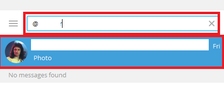
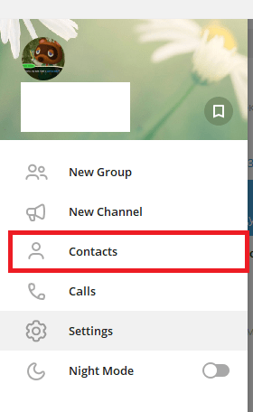
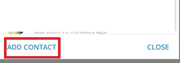
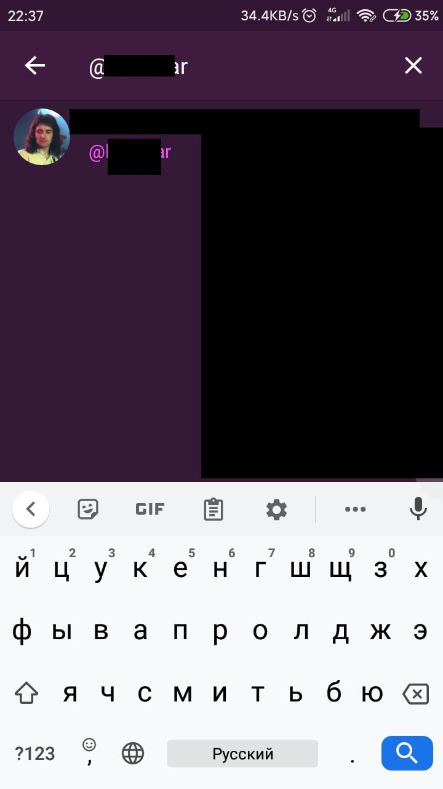
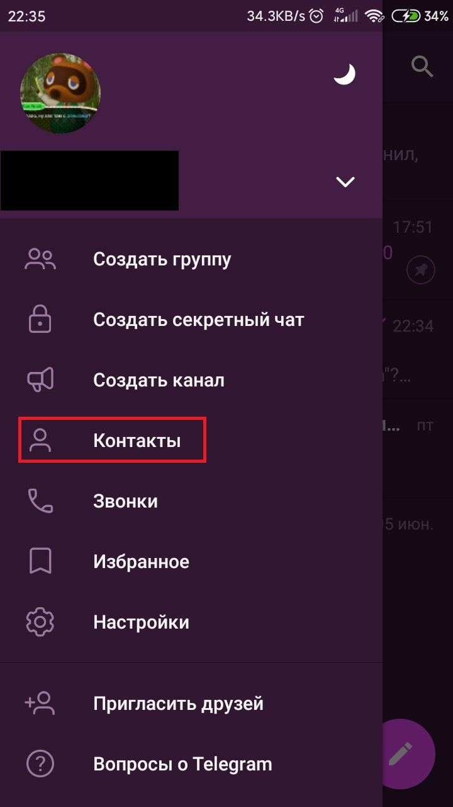
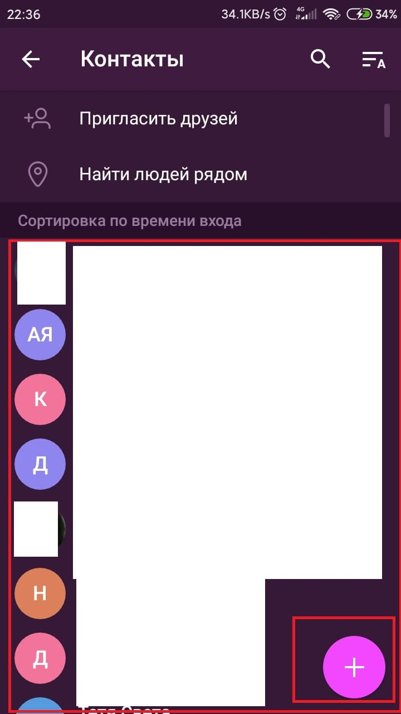

Как найти человека в Telegram
У всех пользователей Телеграм есть собственный профиль. Он нужен, чтобы другие люди могли вас легко найти и начать общаться. Но как найти других людей в мессенджере? В этой статье мы поговорим о 2-х способах нахождения других пользователей в Телеграм, показав весь процесс в виде понятной пошаговой инструкции.
| Как найти человека на ПК версий ↓ | Как найти человека в мобильной версии ↓ | |
Найти человека на компьютере в Telegram
У аккаунтов Telegram есть свой логин или идентификатор. Он начинается на знак «@» и продолжается логином, который вы самостоятельно ввели при создании аккаунта. По этому логину можно найти ваш или чужой аккаунт в мессенджере, для этого совершите следующие действия:
- Нажмите на строку поиска в левом верхнем углу;
- Введите логин или номер телефона человека, которого вы хотите найти;
- Нажмите по его профилю и откройте окно с чатом;
- Для того, чтобы этот аккаунт появился среди ваших чатов, нужно написать первое сообщение и при желании добавить в список контактов.
{kind=link}
Поиск через контакты
В вашем смартфоне или другом мобильном устройстве есть записная книжка или приложение контактов. В нем находятся номера и имена ваших знакомых, друзей, родственников и других людей. Эти контакты используются Телеграме для поиска людей, зарегистрированных в мессенджере. Они же синхронизируются с десктопным приложением. Вот что нужно сделать, чтобы найти человека из списка ваших контактов с компьютера:
- В левом верхнем углу нажмите на кнопку дополнительного меню в виде 3-х полосок;
- Откроется дополнительное меню. В нем найдите и нажмите на пункт «Контакты»;
- Откроется окно контактов. Тут же вы сможете найти уже зарегистрированных пользователей, которые находятся среди ваших контактов. Если вы случайно удалили человека из ваших чатов и желаете его вновь вернуть, этот способ поможет это сделать, нужно лишь написать ему первое сообщение;
- Тут же вы можете добавить новый контакт с номером телефона, нажав на кнопку «Добавить контакт» в левом нижнем углу. После добавления человека он сразу появится среди ваших чатов.
{kind=link}
{kind=link}
Найти человека в Telegram на телефоне
У профилей пользователей в Telegram есть свой логин или идентификатор, который они создают сами. Начинается логин со знака «@» и продолжается придуманным пользователем именем. По этому логину можно найти профиль человека, чтобы это сделать, совершите следующие действия:
- На начальном экране приложения в правом верхнем углу найдите и нажмите на кнопку поиска;
- В открывшейся строке поиска введите логин или номер телефона человека, которого вы хотите найти;
- Откройте его профиль;
- Осталось только написать первое сообщение, и профиль нужного человека появится среди чатов.
{kind=link}
{kind=link}
Поиск через контакты
В вашем смартфоне или другом мобильном телефоне есть контакты – приложение с записанными номерами телефона и именами людей. Контакты синхронизируются с приложением Телеграма для быстрого нахождения людей. Все люди, которые есть среди ваших контактов и зарегистрированы в Телеграм, автоматически появляются среди ваших активных чатов. Если человек зарегистрируется в Телеграм после вашего появления в мессенджере, сразу после этого он появится среди ваших чатов и приложение оповестит вас о его входе в систему. Но если по непонятным причинам контакт удалился среди чатов или вы его случайно удалили, можно совершить следующие действия:
- Откройте дополнительное меню свайпом вправо или нажав кнопку в левом верхнем углу;
- Найдите и нажмите на пункт «Контакты»;
- Откроется список из всех зарегистрированных людей, причем их имена будут теми, что вы дали им в своих контактах. Найдите и нажмите на профиль, который вам нужен. Отправьте ему первое сообщение и этот человек появится среди ваших активных чатов;
- Тут же вы можете найти кнопку в виде плюса в правом верхнем углу для того, чтобы добавить нового человека в ваши контакты. После этого он появится среди ваших чатов.
{kind=link}
{kind=link}
работает
человека найти просто
теперь все ясненько? и в жди меня не надо обращатся ))
Всё предельно понятно
Самый удобный из всех мессенджеров!